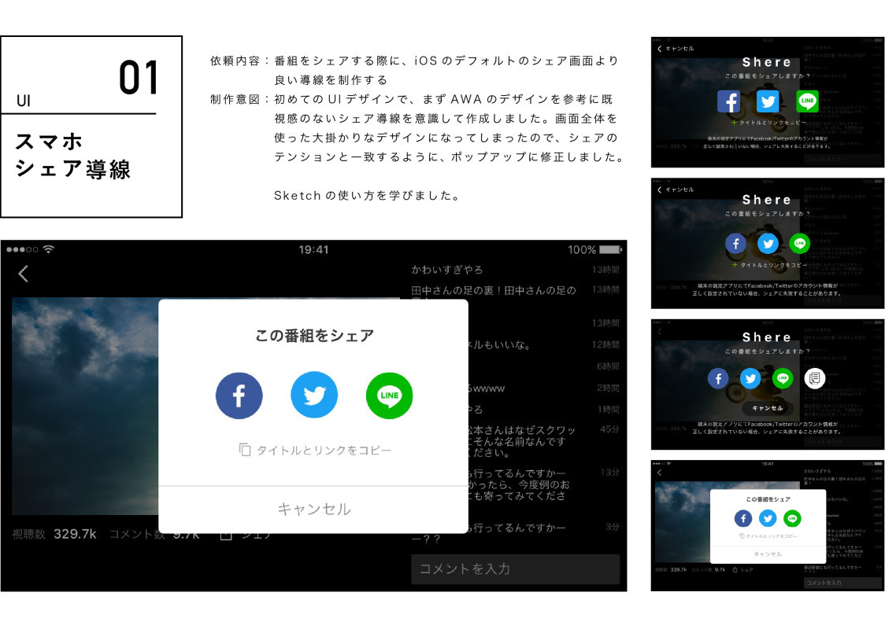
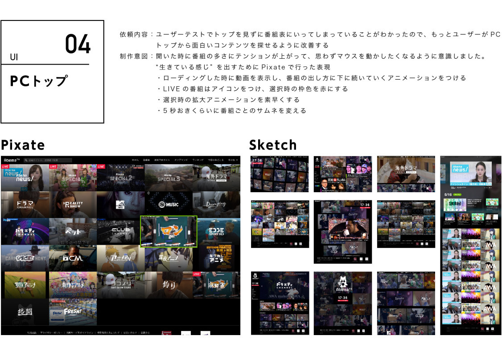
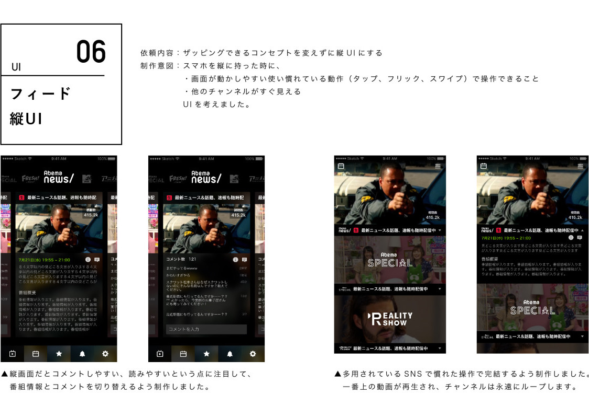

HARUKA ITO
初恋を応援するアプリ
UIDAで学生をターゲットにした共有アプリを企画、XDでデザインし、prottで動作を制作しました。
多くの人が学生のうちに一度は経験する初恋。とにかく気軽に相談・応援ができるアプリを目指しました。
2017.01
FRIL CHANNEL UI
フリマアプリのさがすページの FRIL CHANNEL を制作しました。
2016.10
Abema TV 就業型インターン
CyberAgentの就業型インターンで4週間、UI、ロゴ、バナーなどクリエイティブ制作を行いました。
2016.08
